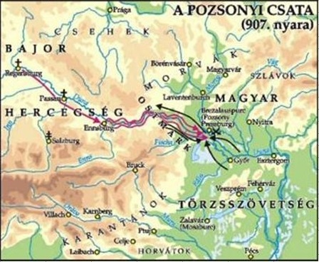

A pozsonyi csata 907. július 4. és 7. közé tehető időben zajlott, a mai Pozsony (korabeli írásokban: Braslavespurch vagy Brezalauspurc) alatt. A kora középkor egyik legjelentősebb ütközete volt. A honfoglaló magyarok 895-896-os bejövetele után a magyar fennhatóság területe nyugat felé 907-re már megközelítette a mai Ausztriában lévő Enns folyó vidékét, ezért akart a Keleti Frank Királyság döntő katonai csapást mérni a magyarokra, hogy megsemmisítse, vagy jelentősen visszaszorítsa őket a korábbi frank területekről, a Morva Fejedelemség és Pannónia területéről. A csata a keleti frank sereg megsemmisítő vereségével végződött, amelyben Luitpold bajor herceg és Theotmár salzburgi érsek is elesett. Szinte a teljes bajor nemesség életét vesztette a csata során.[3] A magyarok újabb területeket nyertek az Enns folyóig, mely 955-ig a magyar határvonal lett.[4] A honfoglalás e sorsdöntő csatával fejeződött be, egyben ez volt az első honvédő háborúnk. A csatát sokáig nem értékelte jelentőségéhez mérten a hazai történetírás. A győztes csatát követően több mint 120 évig nem lépett ellenséges katona a magyarok földjére. A honfoglalók berendezkedhettek az új hazájukban.
